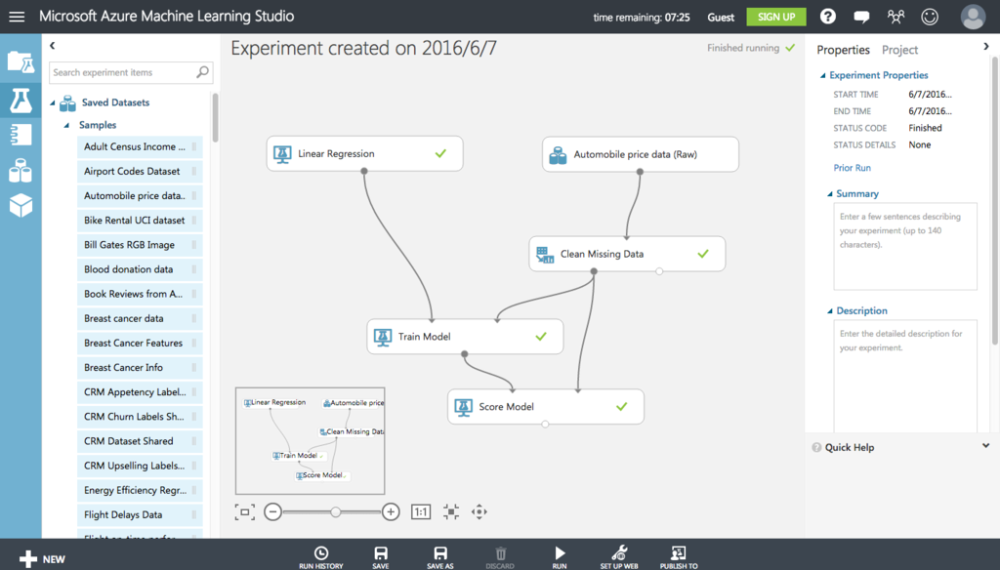
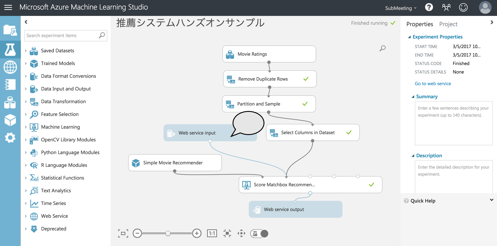

Azure MLで
機械学習をやってみた
@chichi1091
AzureML、Tensolflowとかいっちゃったので調べてみたが
正直よくわからん＼(^o^)／ｵﾜﾀ
ということで、チュートリアル、サンプルとかを動かして
ごまかして
みます
ところで機械学習ってなに？
機械学習のアルゴリズム
教師あり
人間が正解を教えながら、教えられた内容をできるだけ忠実に再現させる
ナイーブベイズ、サポートベクターマシン、決定木、ニューラルネットワーク
教師なし
膨大なデータをサンプルとしてデータの特徴や分布を調査し、解析の手がかり、きっかけを見つけ出す
相関ルールマイニング、クラスタリング
じゃ、Azure MLってなに？
統合開発環境(ML Studio)
GUIベースの機械学習ソリューション
Azure上にホストされており環境構築が不要
Microsoft Research の開発したモデルを無料で利用可能
Python、Rで開発した独自プログラムで拡張可能
WebAPIで公開可能

Azure ML のチュートリアル
推薦システムハンズオンサンプルをやってみました
参考資料：これついては説明できません。。あしからず
やってみたもの
推薦システムを構築する手順書 with Azure Machine Learning
実際に動かしてみよう
14887ユーザで検索するとオススメの映画が表示されます
（お金がないのでこの勉強会終了後にサイトは消えます。。）
推薦システムのEXPERIMENT

Movie Ratings：映画評価データ(csv)
Remove Duplivcate Rows：データ加工１
Partition and Sample：データ加工２
Web service input：入力
Select Columns in Dataset：データ加工３
Simple Movie Recommender：トレーニング
Score Matchbox Recommender：機械学習
Web service output：出力
結果、機械学習はむずかしい！